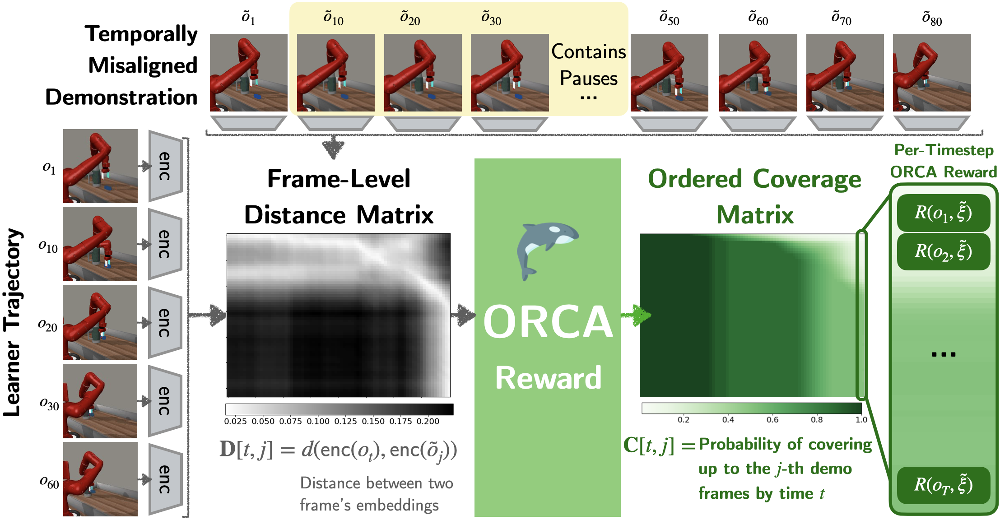
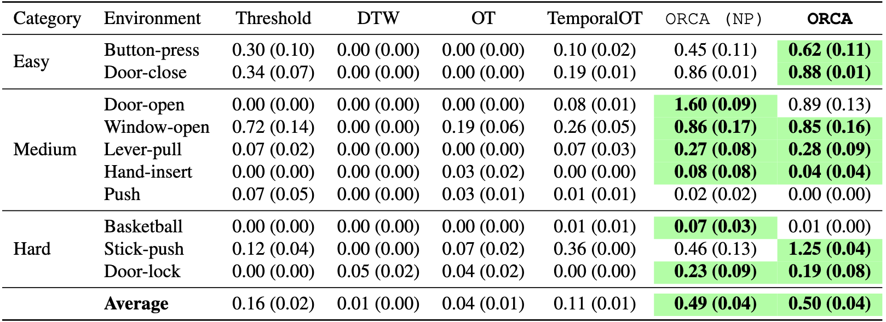
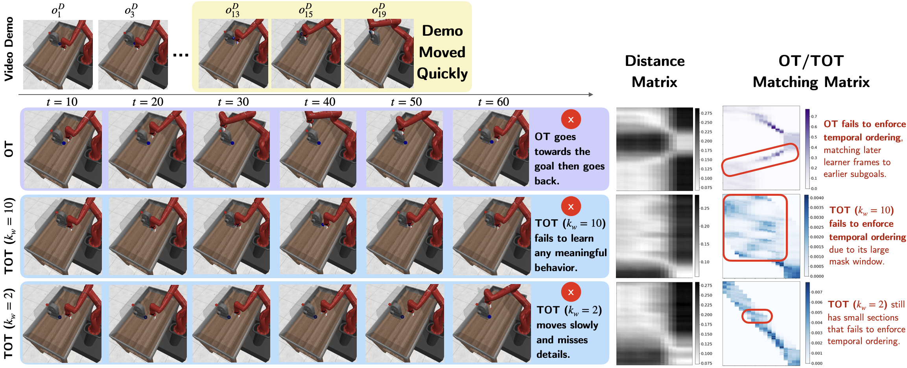
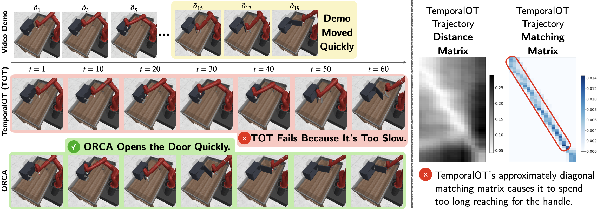

We examine the problem of learning sequential tasks from a single visual demonstration. A key challenge arises when demonstrations are temporally misaligned due to variations in timing, differences in embodiment, or inconsistencies in execution. Existing approaches treat imitation as a distribution-matching problem, aligning individual frames between the agent and the demonstration. However, we show that such frame-level matching fails to enforce temporal ordering or ensure consistent progress. Our key insight is that matching should instead be defined at the level of sequences. We propose that perfect matching occurs when one sequence successfully covers all the subgoals in the same order as the other sequence. We present ORCA (ORdered Coverage Alignment), a dense per-timestep reward function that measures the probability of the agent covering demonstration frames in the correct order. On temporally misaligned demonstrations, we show that agents trained with the ORCA reward achieve 4.5x improvement (0.11 -> 0.50 average normalized returns) for Meta-world tasks and 6.6x improvement (6.55 -> 43.3 average returns) for Humanoid-v4 tasks compared to the best frame-level matching algorithms. We also provide empirical analysis showing that ORCA is robust to varying levels of temporal misalignment.
ORCA consistently outperforms state-of the art frame-level matching algorithms: Dynamic Time Warping (DTW), Optimal Transport (OT), and TemporalOT (OT with temporal constraints) given a single temporally misaligned demonstration.


✅ ORCA enforces subgoals to be visited in the same order as the demonstration.
Meanwhile:
❌ OT allows later subgoals to match with earlier subgoals in its matching matrix.
❌ Despite TemporalOT's temporal constraints, it can still violate ordering depending on demonstration length and mask window size.

✅ ORCA successfully trains an efficient agent to cover all subgoals as soon as possible.
Meanwhile:
❌ OT/TemporalOT makes the agent spend equal time on each subgoal, often causing the agent to exhaust timesteps before completing the task.